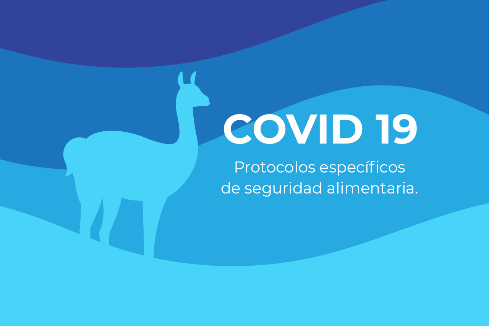

Protocolos de seguridad COVID-19
Orizon informa, que debido a la situación del COVID 19, se implementaron protocolos específicos de seguridad alimentaria recomendados por el Ministerio de Salud de la Nación, fortaleciendo y profundizando los procedimientos operativos de sanitización en cada etapa del proceso productivo y de expedición.

Además de brindar las capacitaciones adecuadas al personal, se formalizaron los nuevos instructivos de trabajo, realizando los registros internos pertinentes de Calidad. Instruyendo al personal en medidas de prevención personal y hacia terceros (evitando contacto con boca, nariz y ojos), incorporando nueva indumentaria y renovando procedimientos de trabajo, según línea productiva y de operaciones.
PRODUCCION:
- Uso de barbijo, anteojos de seguridad o los recetados, y guantes de nitrilo, para aquellos que usan lo de seguridad para cargas.
- Kit de seguridad con mamelucos de friselina y cofias.
- Aumentar la frecuencia de lavado de manos y/o guantes cada 40 minutos durante 20 segundos cada lavado. Siempre usando técnica de OMS.
- Se incorporó un doble proceso de sanitización de envases antes del ingreso de estos a la línea productiva, ya adentro se procederá a mantener especial y minuciosa higiene de los envases antes de ser llenados (según las técnicas en uso).
- A tal fin los operarios encargados de dicho procedimiento fueron instruidos y provistos de indumentaria, equipamiento y sanitizantes aprobados por SENASA.
TRANSPORTE / DEPOSITO:
- Uso de guantes, antiparras o anteojos recetados, barbijo aire (cada 40 o 60 min de trabajo con barbijo).
- Sanitizarán todos los envase vacíos al momento de retirarlos del cliente y antes de ser trasladado a planta elaboradora.
- Al momento de hacer la entrega de la mercadería, evitaran la cercanía con otras personas (1,5 m de distancia mínima), el remito debe ser firmado con la lapicera del comprador, de lo contrario deberá sanitizarla (solución del alcohol o lavandina u otro desinfectante) luego del uso del mismo.
- Luego de cada entrega deberán sanitizar los guantes y las superficies de contacto del camión y/o vehículo (volantes, guantera, todo lo que toque etc.)
- Ventilación frecuente de los espacios, permitiendo la circulación de aire
COMPRAS / DESPACHO / OFICINAS:
- Toda compra que ingresa del exterior será previamente sanitizada por pulverizado o trapeo con solución sanitizante (de envases, librería, alimentos, higiene, etc)
- Los clientes no ingresan a las oficinas y de hacerlo es por excepción autorizada de una persona por vez. Debiendo aguardar en el exterior en fila, respetando la distancia entre ellos solicitada por la OMS.
- En cada puesto/oficina de proceso se pondrá a disposición del personal y del cliente alcohol en gel u otro sanitizante que usara por cambio de actividad o acción de posible riesgo.
- El personal de limpieza y manipuladores deben sanitizar con mayor frecuencia las superficies de apoyo o agarre de manos o insumos que provengan del exterior (manijas, mesones, pisos, estanterías, teclas de llaves de luz y enchufes)
- Los posnet, el teclado de la computadora y todo control remoto se protegerán con film de recambio por día.
- El cajero o quien cobra o entrega de forma directa el bidón usará guantes.
- Ventilación frecuente de los espacios, permitiendo la circulación de aire.
También se instruyó en la conducta a tener en comedor del personal, sanitarios, en las medidas preventivas fuera del lugar
de trabajo (in itinere) y en los hogares de cada empleado.